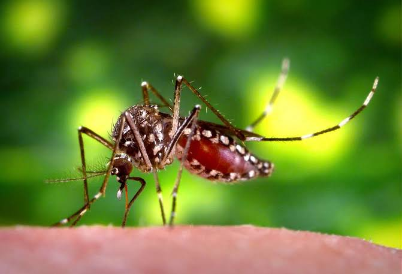

¿Qué es el Dengue?
El dengue es una enfermedad infecciosa causada por el virus del dengue, perteneciente al género flavivirus, que es transmitida por mosquitos, principalmente por el Aedes aegypti. Existen 4 tipos del virus de dengue. La infección causa síntomas gripales, y en ocasiones evoluciona hasta convertirse en un cuadro potencialmente mortal, llamado dengue grave o dengue hemorrágico
Prevención
El dengue se puede prevenir, siguiendo los siguientes consejos...
- Eliminar criaderos de mosquitos (recipientes con agua estancada)
- Usar repelente y ropa que cubra la piel
- Colocar mosquiteros y mallas en puertas y ventanas
- Fumigar en zonas con alta incidencia de casos
Evita tener recipientes con agua estancada...
Síntomas
Los síntomas del dengue incluyen:
Fiebre alta, dolor muscular...
Dolor de Cabeza intenso
y Vomito
y debilidad